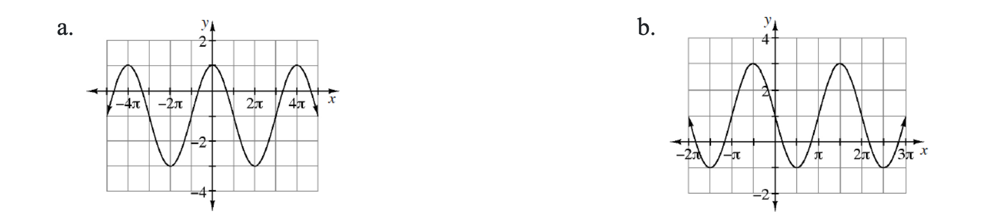

State the degree and determine all of the roots of \(p(x)=5(x+4)(5x^2+4x+20)\).
Phyllis has a problem. She knows that the roots of a quadratic function are \(x=3+4i\) and \(x=3-4i\), but in order to get credit for the problem she needs to know the equation of the function. She is having a hard time with the complex roots, but luckily, her friends are full of advice.
Mercedes says, “Just remember when we made factors from the roots. If the roots are \(7\) and \(4\) the equation is \(y=(x-7)(x-4)\).” Use Mercedes’s idea to help Phyllis write the equation of a quadratic function.
Darin says, “No, no, no. You can do it that way, but that’s too complicated. I think you just start with \(x=3+4i\) and work backwards. So \(x-3=4i\), then, square both sides… Yeah, that’ll work.” Try Darin’s method.
Whose method do you think Phyllis should use?
Sketch a graph of the polynomial function \(p(x)=x(x-3)^3(2x+1)\). State the degree of the polynomial and the end behavior of the function.
Approximate \(A(f,1\le x\le2)\) for \(f(x)=-x^2+6\).
Use four rectangles to approximate an underestimate of the area under the curve.
Use four rectangles to approximate an overestimate of the area under the curve.
Express the sum of the underestimate using sigma notation.
Heat loss, \(h\), per hour through a glass window varies directly with the difference between the indoor and outdoor temperature, \(d\), and inversely with the thickness of the glass, \(g\).
Write an equation that will calculate the heat loss based on the difference of the temperature and the thickness of the glass. Do not forget the constant of proportionality!
The Johnson family has a window that is \(0.3\) cm thick that loses \(2.4\) BTU of energy each hour when the outside temperature is \(50º\text{F}\) and the inside temperature is \(70º\text{F}\). Use this information to determine the constant of proportionality.
The Johnson’s decide to replace the window with one that is \(1.5\) cm thick. How much energy will be lost if the inside temperature is \(70º\text{F}\) and the outside temperature is \(30º\text{F}\)?
The cost of renting a limousine for the senior ball in Beverly Hills is \(\$150\) for up to \(3\) hours and then \(\$40\) per hour for each additional hour. Express this cost as a piecewise-defined function.
Write an equation for each graph shown.

Rewrite each of the following expressions as a single fraction without negative exponents.
\(\large \frac { x ^ { - 1 } y ^ { 2 } + y } { x ^ { - 2 } y ^ { - 1 } + x y ^ { 2 } }\)
\(\large \frac { x ^ { 2 } y ^ { 3 } + y ^ { - 3 } } { y ^ { - 3 } + x }\)